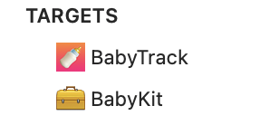
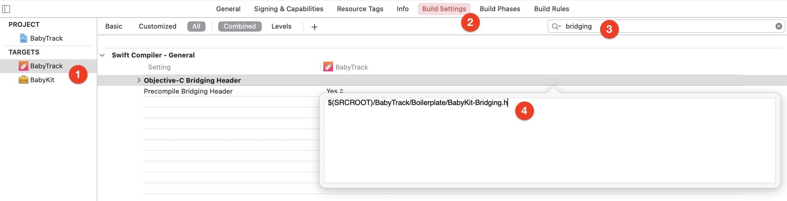
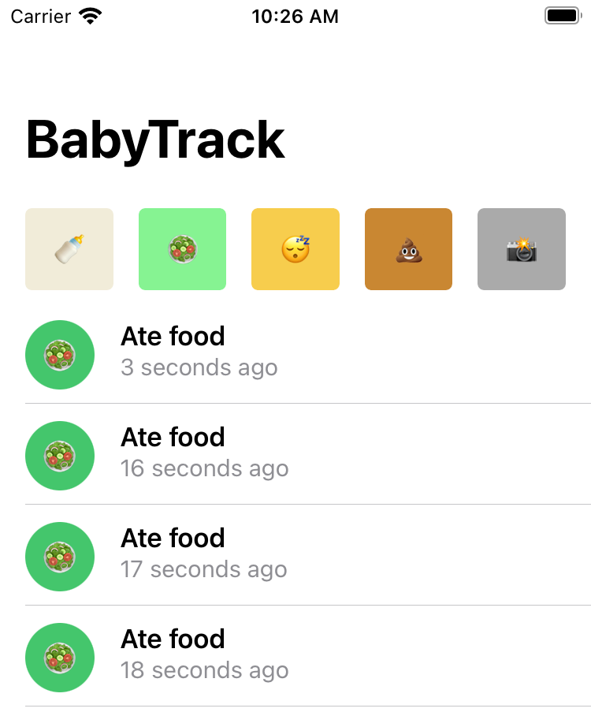
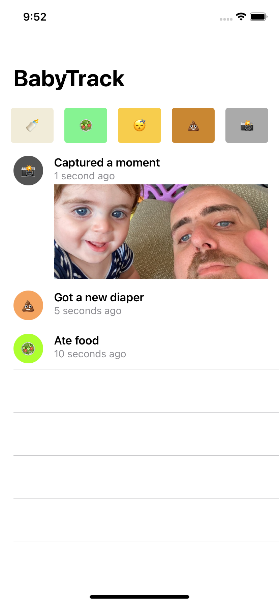
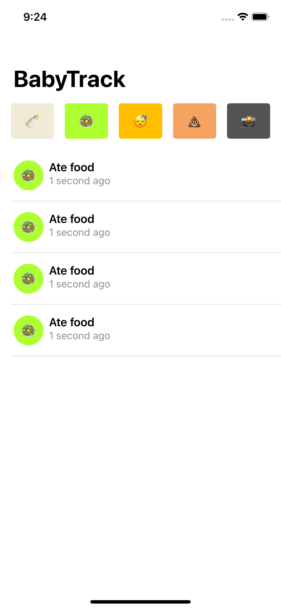
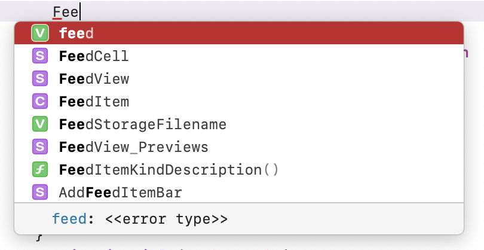
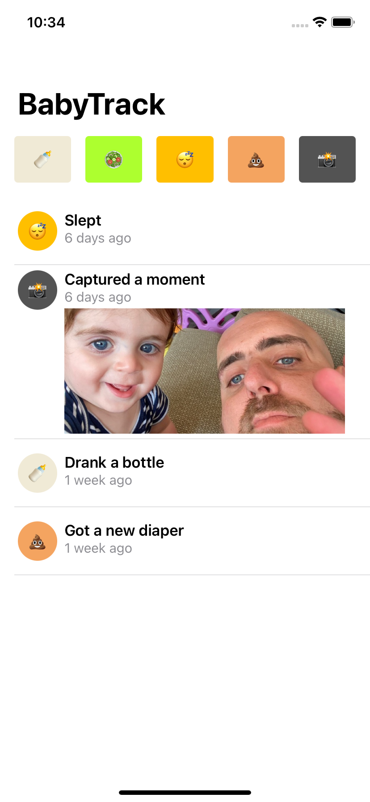
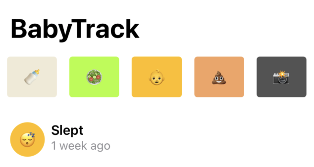
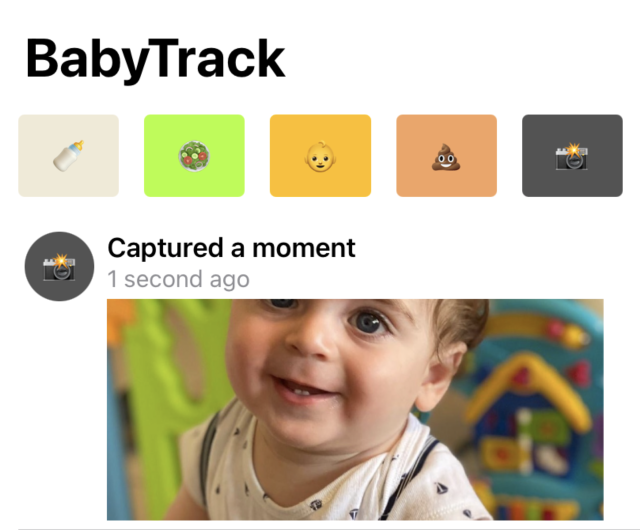

Chapter 12: Objective-C Interoperability¶
You love Swift. Otherwise, you probably wouldn’t be reading this book! Heck, you might’ve even started your iOS journey with Swift without touching its much more battle-tested ancestor — Objective-C.
Objective-C is a Smalltalk-inspired superset on top of the C programming language. Like it or not, Objective-C is still a heavily used language in legacy codebases and apps that have been in production for many years. Put that together with the fact that most third-party SDKs are still provided in Objective-C for compatibility reasons, and it could turn out to be quite useful to know at least some key portions of it.
In your own apps, you’ll often have a sizable Objective-C codebase that just doesn’t feel at home inside your Swift code or want to use some of your shiny new Swift code in your Objective-C code.
Luckily, Apple provides relatively thorough interoperability — hence, the ability for Objective-C code to “see” Swift code and vice versa. But there’s only so much Apple can do for you automatically, which is where this chapter kicks in!
What you’ll learn¶
As a relatively new father, tracking what my child does takes up a huge part of my day. Like other things that need optimizing, there’s an app for that!
In this chapter, you’ll work on an app called BabyTrack, which lets you track what your baby does: eat, drink, sleep, etc.
The version of the app you’ll start with uses its own Objective-C based framework — BabyKit. You’ll spend this entire chapter creating a wholesome experience for consumers of both the Objective-C and Swift portions of your codebase in a way that feels as if it were designed for either.
Getting started¶
Open the starter project in the projects/starter folder and then BabyTrack.xcodeproj.
The project contains two targets:

- BabyTrack is the main app itself. It has several folders, which you’ll explore throughout this chapter. The UIKit folder includes the current version of the app, written entirely in Objective-C.
- BabyKit is an Objective-C based framework that the main target uses. It features a
Feedclass and aFeedItemrepresentation of a single item.
Pick the BabyTrack scheme. Then, build and run it. You’ll see an empty screen momentarily, and then … darkness falls. Seriously though, it’s a black screen. What gives?
Jump over to Boilerplate/SceneDelegate.swift and find the first line in startLegacyApp():
let navigation = UINavigationController(
rootViewController: UIViewController()
)
An empty UIViewController is passed to your navigation controller instead of the Objective-C ViewController you actually want. Yikes, that’s strange. Change UIViewController to ViewController and try to build the project.
You’ll see the following compiler error:
Cannot find ViewController in scope
Your SceneDelegate is a Swift file, and your ViewController is an Objective-C file. It seems your SceneDelegate currently can’t “see” your view controller. Before you fix this, you’ll learn about two important kinds of headers.
Bridging and umbrella headers¶
Bridging and umbrella headers are two headers that do the same thing, in essence: They notify their consumers which portions are exposed to their use, in the header’s context.
Umbrella header¶
You can think of an umbrella header as the master header of a framework. In the context of a framework, it tells its consumers which framework portions are publicly available without the headers needing to be manually imported one by one.
Open BabyKit/BabyKit.h, which is BabyKit’s umbrella header. Notice that it imports the two headers included in the framework:
#import <BabyKit/Feed.h>
#import <BabyKit/FeedItem.h>
Try to comment these out and build the project, and you’ll immediately notice your current code won’t build. You might even see some warnings to the extent of:
/<module-includes>:1:1: Umbrella header for module 'BabyKit' does not include header 'Feed.h'
Open UIKit/FeedCell.h and look at the second line:
#import <BabyKit/BabyKit.h>
This is all a consumer needs to do to use BabyKit, because its umbrella header already takes care of everything. This is a common practice when creating your own framework and a useful component of defining module maps.
Note: Module maps are not in the scope of this chapter, but as the name suggests they are files that map different modules of a framework to their respective headers. If you’re curious, find your DerivedData folder and open the folder that starts with BabyTrack-. Inside Build/Products/Debug-iphonesimulator/BabyKit.framework/Modules, you’ll find the coveted module.modulemap file.
Although this is useful for your BabyKit framework, it still doesn’t solve the initial issue. On to the next type of header.
Bridging header¶
A bridging header belongs to the scope of an app instead of a framework. As its name suggests, it bridges Objective-C files into Swift by exposing any headers imported into it to your Swift files.
Eureka! That sounds like exactly what you need here.
Making the app launch¶
To expose ViewController.h, start by right-clicking Boilerplate in your project navigator and selecting New File…. Then, select Header File and name it BabyKit-Bridging.h. Make sure you select the BabyTrack target.
Replace the contents of the file with this line:
#import "ViewController.h"
All that’s left to do is to actually tell your app to use your new bridging header.
In your project, select the BabyTrack target and then the Build Settings tab on top.
Use the search bar to find the Objective-C Bridging Header field, then set the field’s value to $(SRCROOT)/BabyTrack/Boilerplate/BabyKit-Bridging.h:

Finally, go back to SceneDelegate.swift and make sure you use ViewController() instead of UIViewController() in startLegacyApp().
Then, try to build again.
Build succeeds, huzzah! Run the app and you’ll finally see the basics of it on the screen.
The top bar features buttons to track various activities in your baby’s day. Tap a few of the buttons on top, and you’ll notice all items show up as “Ate food”:

Sounds like a quick bug for you to fix. Time to get to it.
Enriching FeedItem¶
Open FeedCell.m and find configureWithFeedItem:. You’ll notice that there is absolutely nothing in this configuration method that modifies the title or icon on the left. The only “right” piece is the subtitle — the date itself.
Also, there is code to download an attachment using dataTaskWithURL:completionHandler:, but it’s using an empty NSURL. All these missing pieces need to come from the FeedItem passed to the configuration method.
The first option would be to create an Objective-C category as an extension to FeedItem, but an easier method you already know is simply using Swift!
Open FeedItem+Ext.swift and you’ll find several extensions waiting there for you: an attachmentURL available on the FeedItem as well as an extension on FeedItemKind you’ll use to get the appropriate title, emoji and color per item kind.
Exposing Swift to Objective-C¶
Although you needed a fancy bridging header to bridge Objective-C code into Swift, going the other way is quite simple. Simply annotate Swift methods, classes and properties with @objc, and they’ll be available to your Objective-C code.
For example, replace:
extension FeedItem
With:
@objc extension FeedItem
This exposes any properties in this extension to Objective-C as long as Objective-C has a proper representation for it. But how does it actually work?
Press the Related Items icon at the top-left of your editor window (or press Ctrl+1), and then select Generated Interfaces ► BabyTrack-Swift.h:

You’ll notice a massive, automatically generated Objective-C header file that represents all of the Swift code exposed to your Objective-C code. Build the project to regenerate the file, then search for attachmentURL, and you’ll find the following block:
@interface FeedItem (SWIFT_EXTENSION(BabyTrack))
@property (nonatomic, readonly, copy) NSURL * _Nullable attachmentURL;
@end
As you see, Swift automatically synthesized this Objective-C property to mirror the Swift counterpart you’ve annotated.
Now, go back to FeedItem+Ext.swift and add the @objc annotation to the second extension on FeedItemKind.
Build the project, and you’ll find a compiler error:
‘@objc’ can only be applied to an extension of a class
It’s not all magic and sparkles. There are some limits to the great bridging capabilities provided to you. In this case, FeedItemKind isn’t a regular Swift enum as you may come to expect.
Before continuing, remove the @objc annotation from the FeedItemKind extension again.
Open FeedItem.h and you’ll notice typedef enum. But how does Swift represent this? Like you did before, press the top-left Related Items button, then select Generated Interface.
You can now see exactly how your Objective-C code is exposed to Swift. Look at the definition of FeedItemKind:
public struct FeedItemKind : Equatable, RawRepresentable {
public init(_ rawValue: UInt32)
public init(rawValue: UInt32)
public var rawValue: UInt32
}
It’s not a Swift enum at all, as expected! It’s actually just a plain C enum represented by a UInt32, which is exactly why you can’t extend it from Swift.
No worries, though, because you can still work around this. However, before you do, you’ll take a little detour to learn about what can and can’t be directly (or easily) bridged between Swift and Objective-C.
What can and can’t be directly bridged¶
Bridging happens automatically in many cases. For example, when you create a Swift class that inherits from an Objective-C class or write Swift code that extends an Objective-C object, that Swift code is automatically exposed to your Objective-C code as long as you annotate it with @objc. Exceptions to this are Swift-only features, such as:
- Structs
- Enums, unless they have an
Intraw value type - Tuples
- Global functions
- Type aliases
- Variadics (e.g.
...splat operator) - Nested types
- Curried functions
Also, full-blown generics aren’t supported. However, Objective-C has quite robust lightweight generics, which support a relatively large set of generic scenarios, such as bridging Array<FeedItem> to NSArray <FeedItem *>*, Dictionary<String, Any> to NSDictionary<NSString*, id>* and vice versa. It will even keep generic constraints of your own Objective-C classes, so the following Objective-C class:
@interface BatchArchiver<T: id<NSCoding>> : NSObject
+ (NSArray <NSData *> *) archive:(NSArray<T> *) objects;
+ (NSArray <T> *) unarchiveFromData:(NSArray<NSData *> *) data;
@end
Will be perfectly bridged to Swift, like so:
open class BatchArchiver<T>: NSObject where T: NSCoding {
open class func archive(_ object: [T]) -> [Data]
open class func unarchive(fromData data: [Data]) -> [T]
}
Another interesting tidbit is the throw keyword. Throwing errors is a Swift feature not supported in Objective-C, so instead an Objective-C error pointer reference (NSError **) is provided as an argument to your Objective-C method. That method would also automatically get a BOOL return type if it didn’t have any other return type, so you can get both a yes/no failure as well as a detailed error object.
You can wrangle many of these unsupported Swift language features by wrapping them in Objective-C supported types. For example, you can wrap a struct in a lightweight class or type-erase a generic object that can’t easily be bridged.
Bridging back from Objective-C to Swift is also automatic as long as you import the required headers into your bridging header. But similar rules apply here as well. For example, you cannot annotate a non-class extension as @objc as you just noticed when trying to use the extension on FeedItemKind.
Extending without extending¶
To still support accessing the Swift-based extensions on FeedItemKind, you can simply wrap the properties in methods. Go back to FeedItem+Ext.swift and add the following static methods to the FeedItem extension:
static func color(for kind: FeedItemKind) -> UIColor {
kind.color
}
static func emoji(for kind: FeedItemKind) -> String {
kind.emoji
}
static func title(for kind: FeedItemKind) -> String {
kind.title
}
These three static methods let you get the color, emoji and title for a specified kind. Because they’re part of an @objc-annotated extension, they will also be exposed to your Objective-C code.
Time for you to use them!
Switch over to FeedCell.m and add the following import to the top of the file:
#import "BabyTrack-Swift.h"
This exposes all Swift content in the BabyTrack target to your FeedCell.
Next, add the following three lines to the beginning of configureWithFeedItem::
self.lblKindEmoji.text = [FeedItem emojiFor:feedItem.kind];
self.lblKindEmoji.backgroundColor = [FeedItem colorFor:feedItem.kind];
self.lblKindTitle.text = [FeedItem titleFor:feedItem.kind];
These lines simply configure the emoji and title elements in the cell with the right contents.
Then, find:
[NSURL new]
Replace it with:
feedItem.attachmentURL
All ready to go. Build and run your project, and you’ll finally see the items you’ve added get listed correctly:

However, there is still some oddity in your extension worth fixing.
Setting explicit names for @objc members¶
Although a method called emoji(for:) makes sense for Swift, Objective-C consumers would expect a method simply called emojiForKind:. The automatic bridging doesn’t really get this correctly, but no worries!
In FeedItem+Ext.swift, replace the three static methods with the following:
@objc(colorForKind:)
static func color(for kind: FeedItemKind) -> UIColor {
kind.color
}
@objc(emojiForKind:)
static func emoji(for kind: FeedItemKind) -> String {
kind.emoji
}
@objc(titleForKind:)
static func title(for kind: FeedItemKind) -> String {
kind.title
}
You just used a variation of @objc in which you explicitly provide the full name exposed to your Objective-C code.
Go back to FeedCell.m and fix the three existing calls to emojiForKind:, colorForKind: and titleForKind:, accordingly.
Then, build your code to confirm that it still works.
Neat! As you just learned, Swift gets you most of the way there. But when you need that granular level of control, it’s right there at your fingertips.
Note: There is one more variation of the @objc annotation, which you won’t use in this chapter but is worth mentioning, called @objcMembers. Annotate a class with it, and all of its members are automatically exposed to Objective-C without having to attach @objc by hand to each member.
Improving Objective-C enums¶
As you noticed before, your FeedItemKind enum is bridged as a non-finite standard C enum, which is not optimal when working in a Swift codebase where you’re used to working with a finite set of strongly typed cases.
Luckily, Objective-C provides a modern way to define an enum that is favorable for Swift.
Go to FeedItem.h and replace:
typedef enum {
With:
typedef NS_CLOSED_ENUM(NSInteger, FeedItemKind) {
Also, at the closing line of the enum, remove the redundant FeedItemKind, leaving only };.
Using NS_CLOSED_ENUM lets you define a Swift-bridgeable enum represented by the type in the first argument (NSInteger) named as the second argument (FeedItemKind).
Switch to the generated Swift interface for this header like you did before, and you’ll notice your enum looks a lot different now:
@frozen public enum FeedItemKind: Int {
case bottle = 0
case food = 1
case sleep = 2
case diaper = 3
case moment = 4
case awake = 5
}
Wow, the difference is like night and day! Not only do you get a real Swift enum, but your cases no longer include the FeedItemKind prefix, exactly like you would expect in a native Swift codebase. Also, each case is represented by a regular Int and not a UInt32.
Build your project, and you’ll discover a dozen or so compilation errors caused by your enum case names having changed.
Unfortunately, there’s nothing much to do but manually replace the FeedItemKind prefix with a dot in each of the cases as well as make the the first letter lowercase. Go ahead and take care of it — I’ll wait for you right here.
Once you have fixed all your compilation errors, you’ll need to make one minor fix.
Head over to ViewController.m and find the for loop inside reload.
Add the following line at the beginning of the loop:
UIButton *button = self.actionButtons[kind];
Then, add the next two lines to the end of the loop:
[button setTitle:[FeedItem emojiForKind:kind]
forState:UIControlStateNormal];
[button setBackgroundColor:[FeedItem colorForKind:kind]];
These added lines ensure the buttons in the top action bar are also fed by your new extensions.
Build and run. You’ll notice everything is working as expected. More impressive than that, though, is that your Objective-C enum cases are still called FeedItemKindBottle and the like, while your Swift case is simply called .bottle. You just created an entirely native experience for consumers of your framework from either side of the language war, and you’ll keep perfecting your code this way throughout this chapter.
Objective-C and … SwiftUI ?!¶
You heard it. In this section, you’re going to pretend your Objective-C app doesn’t exist. You’ve just been handed this Objective-C framework, and you want to build a brand new SwiftUI app that uses it.
Before you get to the SwiftUI-specific part, you’ll take some time improving the Swift-related part of your interaction with the BabyKit framework.
Improving nullability¶
Nullability in Objective-C is the parallel of using Optional in Swift. Generally speaking, these nullability constraints are automatically bridged in a decent way but not good enough for a demanding developer, such as yourself.
Open FeedCell.swift and add the following print statement inside the initializer:
print(feedItem.date)
You’ll immediately see the following warning:
Coercion of implicitly unwrappable value of type ‘Date?’ to ‘Any’ does not unwrap optional
Wait, unwrap optional? All feed items must have a date attached to them, so why is the date property optional to begin with?
To understand this, remove the print statement and switch over to FeedItem.h. Take a look at the generated Swift interface as you’ve done earlier:
open class FeedItem: NSObject {
public init!(kind: FeedItemKind)
public init!(kind: FeedItemKind, date: Date!)
public init!(kind: FeedItemKind,
date: Date!,
attachmentId: UUID!)
open var kind: FeedItemKind
open var date: Date!
open var attachmentId: UUID!
}
public func FeedItemKindDescription(_: FeedItemKind) -> String!
Notice the alarming force-unwrap sign ! scattered all over the place to denote an implicitly unwrapped optional in your initializers, properties and return types.
Some of these should be optional, but most of them should not. The problem arises because Objective-C types are implicitly unwrapped by default. Think about it: If you’ve ever worked with Objective-C, you never thought too much about nullability at the compiler level, because there is no compile-time nullability, just runtime nullability, as is fit for a dynamic language.
Because there’s no obvious bridging to be done here, Swift marks all these various pieces as implicitly unwrapped, as they are in Objective-C. It’s time for you to improve this.
Head back to FeedItem.h. The portions that should be optional are attachmentId and the date in the third initializer.
Replace:
@property (nonatomic, strong) NSUUID * attachmentId;
With:
@property (nonatomic, strong) NSUUID * _Nullable attachmentId;
The _Nullable annotation on the NSUUID pointer marks attachmentId as optional, and Swift should treat it as such.
Note that as soon as you add a single nullability type specifier, the compiler will start emitting warnings until you resolve all pointers without one in that specific header file.
Replace the third initializer definition with the following:
- (FeedItem *) initWithKind: (FeedItemKind) kind
date: (NSDate * _Nullable) date
attachmentId: (NSUUID * _Nullable) attachmentId;
In this case, the date and attachmentId parameters are both marked as nullable. What’s the opposite of _Nullable, though? Simply — _Nonnull.
Replace the return type of the first method from FeedItem * to FeedItem * _Nonnull, so it looks like this:
- (FeedItem * _Nonnull) initWithKind: (FeedItemKind) kind;
This annotation tells Swift that this initializer will return a non-optional FeedItem.
You’re probably flooded with warnings at this point and not too eager to add non-null definitions to all the remaining code. Fortunately, the good folks at Apple have you covered.
At the top of the file, immediately below the import statement, add:
NS_ASSUME_NONNULL_BEGIN
Then, add to the very bottom of the file:
NS_ASSUME_NONNULL_END
Build your app, and you’ll see that all your warnings are gone!
This statement is the equivalent of “innocent until proven guilty” — or, in this case, “non null until defined otherwise”.
Feel free to remove the single _Nonnull you’ve added at this point.
If you switch back to the generated Swift interface for the header, you should see the following definition for FeedItem:
open class FeedItem: NSObject {
public init(kind: FeedItemKind)
public init(kind: FeedItemKind, date: Date)
public init(kind: FeedItemKind,
date: Date?,
attachmentId: UUID?)
open var kind: FeedItemKind
open var date: Date
open var attachmentId: UUID?
}
Notice how clean everything looks now. Everything is non-optional, except for the few occurrences you’ve defined, as if you’d written this in Swift to begin with (I won’t tell if you won’t!).
Similar optionality fixes have already been done for you in Feed.h. Feel free to jump over and check those out if you’re curious.
Setting up SwiftUI¶
With Feed optimized, it’s time for you to start working on the SwiftUI part of your app.
Go to SceneDelegate.swift. Below startLegacyApp(), add the following method:
private func startNewApp() {
self.window?.rootViewController = UIHostingController(
rootView: FeedView()
)
self.window?.makeKeyAndVisible()
}
In this code, you use a UIHostingController to wrap FeedView — a SwiftUI View — and use it as the root view controller of your window.
Finally, in scene(_:willConnectTo:options:), replace startLegacyApp() with startNewApp().
Build and run:
Nothing too exciting; just a simple “Hello, World!” view. Time for you to build the SwiftUI counterpart of your Objective-C ViewController.
You’ll start by creating the top bar with the different kinds of activities you can track in the app. Open AddFeedItemBar.swift and add the following two properties to AddFeedItemBar:
let isBabySleeping: Bool
let onKindTapped: (FeedItemKind) -> Void
AddFeedItemBar uses these two properties like so:
isBabySleepingdetermines if you’ll show an awake or sleeping button.onKindTappednotifies the consumer when an item is selected.
Next, replace the contents of body with the following code:
let kinds: [FeedItemKind] = [.bottle, .food, .sleep,
.diaper, .moment]
// 1
HStack(spacing: 16) {
// 2
ForEach(kinds, id: \.self) { kind in
// 3
let type = kind == .sleep && isBabySleeping ? .awake : kind
Button(type.emoji) {
// 4
onKindTapped(type)
}
.frame(minWidth: 52, maxWidth: .infinity,
minHeight: 52, idealHeight: 52)
.background(Color(kind.color))
.cornerRadius(4)
}
}
.padding([.leading, .trailing])
In the code above, you:
- Define a horizontal stack to contain the various action icons
- Use
ForEachto iterate over the list of kinds - If
kindissleepbut the baby is currently sleeping, you’ll decide to show theawakeaction instead. - Display a
buttonwith the appropriate emoji and color, invokingonKindTappedwith the appropriate kind once tapped by the user.
Next, you’ll focus on getting this screen on the view.
Improving FeedItemKind’s naming¶
There is already some room for improvement here from the Swift perspective. Notice the type FeedItemKind.
In Objective-C, it is quite common to have such verbose naming, but in Swift, you might have wanted to structure your code as follows:
struct FeedItem { ... }
extension FeedItem {
enum Kind {
// cases
}
}
This would result in a nested FeedItem.Kind. Luckily, Objective-C provides a nice way to achieve this level of granularity, using NS_SWIFT_NAME.
Head over to FeedItem.h and find the FeedItemKind enum. Replace the ending curly brace, e.g. }; with:
} NS_SWIFT_NAME(FeedItem.Kind);
With this tiny macro, you tell your code to still use FeedItemKind for Objective-C, but — specifically for Swift — to expose this type as FeedItem.Kind. This is the sort of attention to detail that makes your consumers not even notice they’re using an underlying Objective-C framework.
Build your app, and you’ll notice a bunch of compiler errors. The quickest way to deal with these would be to do a quick Find and replace for FeedItemKind to FeedItem.Kind in all Swift source files, but you can also fix these quickly by hand.
There will be a bunch of additional opportunities to use this trick throughout the rest of this chapter, so keep reading!
It’s time to put something on the screen. Go to FeedView.swift, and replace the contents of body with the following:
NavigationView {
VStack {
AddFeedItemBar(isBabySleeping: false) { kind in
}
.padding([.top, .bottom], 8)
List(1..<5) { i in
FeedCell(feedItem: .init(kind: .food))
}
}
.navigationTitle("BabyTrack")
}
.navigationViewStyle(StackNavigationViewStyle())
In this code, you wrap two items in a vertical stack — the AddFeedItemBar you just created and a List with five fake FeedCells. You also wrap your screen in a NavigationView.
Note: To save you time, FeedCell was already provided for you. Feel free to check it out in FeedCell.swift.
Build and run, and you’ll see the following:

Nice! You’ve got the basics looking good, but you’re still not doing anything or feeding this UI with real data. You’ll take care of this next.
Understanding the problem with BabyKit.Feed¶
Although your UIKit-based Objective-C code uses a regular UITableView with an associated delegate and imperatively reloads the table and reads items from a Feed object, SwiftUI is quite different.
With SwiftUI, the information the user sees in the UI is always a function of your state. This means that SwiftUI should be notified when the feed changes and update the UI accordingly. But how?
If you were to build this entire app from scratch, making your Feed an ObservableObject would be a sure choice — because your SwiftUI Views could immediately be fed and updated by it.
Unfortunately, you already have a bunch of existing code in Feed.m, which you definitely won’t want to rewrite. In a perfect world, you could have both a Swift Feed and an Objective-C Feed, each tailored to its specific needs.
Is that even possible?! Why yes, it is, with NS_REFINED_FOR_SWIFT.
You can use this macro to hide Objective-C code from Swift consumers while providing your own, Swifty alternative to it. This sounds like exactly what you need!
Refining the Feed object¶
Open Feed.h. Above the @interface line, add the following line:
NS_REFINED_FOR_SWIFT
That’s it! It’s quite common to use this on individual properties or methods. But in this case, refining the entire class would prove quite useful.
Build your project, and you’ll see a compiler error:
Cannot find ‘Feed’ in scope
More interestingly, if you start typing Feed, you’ll notice it doesn’t show up in auto-complete anymore:

So where is it? The macro hid it for you using a neat trick — prepending two underscores (__) to the class name. This prevents the auto-complete engine from seeing it while still giving you access to it for refinement purposes.
In FeedView.swift, replace:
let feed = Feed()
With:
let feed = __Feed()
Your code will now build with no issues. This also frees up the Feed symbol for your Swift code, so you could make your own just like defined earlier.
In the project navigator, right-click the BabyKit folder and pick New file…. Then, choose Swift File and name it Feed.swift. Make sure you have the BabyKit target selected.
Next, replace the content of your new file with the following code:
import Foundation
import Combine
import SwiftUI
// 1
public class Feed: ObservableObject {
// 2
@Published public var items: [FeedItem] = []
// 3
private let legacyFeed = __Feed()
public init() {
// 4
items = legacyFeed.loadItems()
}
// 5
public var isBabySleeping: Bool {
legacyFeed.babySleeping
}
public func addItem(of kind: FeedItem.Kind) {
items.insert(legacyFeed.addItem(of: kind), at: 0)
}
public func addMoment(with attachmentId: UUID) {
items.insert(
legacyFeed.add(FeedItem(kind: .moment,
date: nil,
attachmentId: attachmentId)),
at: 0
)
}
public func storeImage(_ image: UIImage) -> UUID? {
legacyFeed.store(image)
}
}
This code is quite long, but all it does is wrap the original Objective-C Feed in a SwiftUI-friendly shell. You:
- Define a new
Feedclass that conforms toObservableObject. - Use an
@Publishedproperty to store the current feed items. Thanks toObservableObject, changes to this property will automatically update SwiftUI consumers. - Instantiate a copy of
__Feed, your Objective-C feed. You’ll relay any of the heavy work to it. - In your initializer, you initialize your
@Publishedproperty by callingloadItems()on the Objective-C feed. - From here on, you simply mirror calls to the Objective-C feed while wrapping each call in a SwiftUI-friendly way, making sure to update your
@Publisheditemsproperty as you go.
All done! Before moving on, there are two pieces that stand out as non-Swifty: legacyFeed.babySleeping and legacyFeed.store(). You can use the same NS_SWIFT_NAME trick here, as well.
Go to Feed.h and replace:
@property (nonatomic, readonly) BOOL babySleeping;
With:
@property (nonatomic, readonly) BOOL babySleeping NS_SWIFT_NAME(isBabySleeping);
Also, replace
- (NSUUID * _Nullable) storeImage:(UIImage *) image;
With:
- (NSUUID * _Nullable) storeImage:(UIImage *) image NS_SWIFT_NAME(storeImage(_:));
You’ve now configured Swifty names for both of these entities. Build your project, spot the compiler errors and make the appropriate renames.
Improving property mirroring with @dynamicMemberLookup¶
Right now, isBabySleeping simply mirrors legacyFeed.isBabySleeping. This is fine for a single item, but it can become quite tedious and full of boilerplate as you add more and more properties to your Objective-C Feed.
Fortunately, because Feed is a Swift class now, you can leverage some powerful Swift tricks, such as @dynamicMemberLookup.
Add the @dynamicMemberLookup annotation to Feed so it looks like this:
@dynamicMemberLookup
public class Feed: ObservableObject {
Then, add the missing subscript method to the class:
public subscript<T>(
dynamicMember keyPath: KeyPath<__Feed, T>) -> T {
legacyFeed[keyPath: keyPath]
}
This lets you perform a dynamic lookup to any Key Path between __Feed and a generic T, meaning any property of __Feed.
Finally, remove the isBabySleeping property from Feed.
With the power of dynamic member lookup, you can now access every property of the Objective-C Feed directly through the Swift Feed, with no additional boilerplate.
Finalizing FeedView¶
You have almost everything ready to go to finalize FeedView. Head over to FeedView.swift.
Replace:
let feed = __Feed()
With:
@StateObject var feed = Feed()
You’ve just replaced the legacy Objective-C Feed with your newly created SwiftUI-centric Feed, which is annotated with @StateObject so it can automatically keep the view up to date.
Then, replace the List in the view with:
List(feed.items, id: \.date) { item in
FeedCell(feedItem: item)
}
This code uses your Feed’s @Published items and creates a cell for each. This will automatically be re-invoked whenever the items change.
Build and run your app, and you’ll finally see your feed items show up on the screen:

If you look at the screenshot, you’ll notice that even though the baby is currently sleeping, you’re seeing the sleep action instead of awake action. This is because you’re still passing a hard-coded false to AddFeedItemBar.
Replace:
AddFeedItemBar(isBabySleeping: false) { kind in
With:
AddFeedItemBar(isBabySleeping: feed.isBabySleeping) { kind in
This property actually uses the @dynamicMemberLookup implementation you’ve added earlier.
Build and run again, and your toolbar should show up correctly:

You’ll notice that tapping the buttons doesn’t do anything, yet. It’s time for you to wrap this chapter up with two final changes.
Reacting to tapping the action bar¶
Inside the AddFeedItemBar closure, add the following code:
// 1
print("Selected \(FeedItemKindDescription(kind))")
// 2
if kind == .moment {
// ???
return
}
// 3
feed.addItem(of: kind)
In this code you:
- Print out the description of the selected kind using
FeedItemKindDescription, a global function from Feed.h. - If the user selects a moment, you’ll have them pick a photo. You still don’t have all the parts to do this, so you’ll skip this for now.
- If the user selected a non-moment action, you ask the
Feedto add an item of the selected kind.
Build and run, and tap some of the buttons on top.
You’ll see output similar to the following:
Selected Awake
Selected Bottle
Selected Diaper
Selected Food
Selected Sleeping
You’ll also notice that, finally, items are shown in your list as you tap the buttons on the action bar. Everything is working in sync and reactively updated by your Feed, which is an ObservableObject.
As long as you’re here, how about taking care of this ugly global FeedItemKindDescription function?
Head over to FeedItem.h and find the definition of the global function at the bottom of the file:
NSString * FeedItemKindDescription(FeedItemKind);
How can you make this nicer? Wrap it in a different object? Refine it using NS_REFINED_FOR_SWIFT? You could. But there’s a nicer way.
Replace the line with:
NSString * FeedItemKindDescription(FeedItemKind)
NS_SWIFT_NAME(getter:FeedItemKind.description(self:));
You just used a specialized version of NS_SWIFT_NAME that lets you define not only your own name but also this global function as a getter of a different type. In this case, FeedItemKindDescription(kind) is now simply kind.description, as you’d expect. How magical!
Build your project, and you’ll get this informative compiler error:
‘FeedItemKindDescription’ has been replaced by property ‘FeedItemKind.description’. Replace ‘FeedItemKindDescription(kind)’ with ‘kind.description’.
You can use the Fix button to automatically use your new Swifty naming, while your existing Objective-C code can still use the regularly named global function.
Finally, to wrap up this massive undertaking, you’ll take care of adding a new moment.
Letting the user pick a moment photo¶
When the user wants to add a new moment, the Objective-C version of the app modally presents a PHPickerViewController to let the user pick a photo.
There are two problems with this in your new SwiftUI app:
- Funnily, even though
PHPickeris an iOS 14 and up API, there is no SwiftUI-specific handling for it, and it is only provided as aUIViewController. - There is no way to do a simple modal presentation with a
UIViewController, but only using SwiftUI-specific views.
To alleviate these problems, you’ll need to wrap PHPickerViewController with a UIViewControllerRepresentable — a protocol that lets you bridge UIViewControllers into SwiftUI.
Open AddMomentView.swift, where the basic shell of this has already been provided for you with an AddMomentView struct conforming to UIViewControllerRepresentable.
This struct includes a few important pieces:
- An
isPresented@Bindingused to show and hide the view -
makeUIViewController(context:)from which you return a newPHPickerViewControllerlimited to a single image, with the object’s coordinator as the delegate -
makeCoordinatoris responsible for returning a new instance ofCoordinator. - A
Coordinatordefinition. The coordinator is responsible for communicating changes from your view controller to your SwiftUI views. In this case, it is also the delegate forPHPickerViewController.
Everything is done except for handling the user’s photo selection. At the end of picker(_:didFinishPicking), add:
// 1
result.itemProvider
.loadObject(ofClass: UIImage.self) { [weak self] obj, err in
// 2
defer { self?.parent.isPresented = false }
// 3
guard let image = obj as? UIImage,
let parent = self?.parent else { return }
// 4
if let err = err {
print("Error in picked image: \(err)")
return
}
guard let attachmentId = parent.feed.storeImage(image) else {
print("Failed storing, no UUID")
return
}
// 5
DispatchQueue.main.async {
parent.feed.addMoment(with: attachmentId)
}
}
In the above code, which won’t compile yet, you handle the user’s picked photo by:
- Using the
PHPickerResult’s item provider to try to load an object of typeUIImage - Using a
deferstatement to setisPresentedback tofalseat the end of the current scope. This will cause the view to be dismissed. -
Making sure you can unwrap the resolved
objectas aUIImageand that theparentobject (e.g.AddMomentView) is accessible -
Printing an appropriate message, if there is an error or you’re unable to store the selected image
- Using the resulting
attachmentIdto add a new moment.
To make the code compile, add the following property before the isPresented binding at the top of the struct:
let feed: Feed
All that’s left to do is to use your new view. Head back over to FeedView.swift.
Above the feed @StateObject, add:
@State private var isPickingMoment = false
You’ll use this @State property to keep track of whether the add moment view is currently displayed.
Next, replace // ??? inside the .moment conditional with:
isPickingMoment = true
This sets the presentation state to true if the user tapped the moment action button.
Finally, before the .navigationViewStyle modifier, add the following modifier:
.sheet(isPresented: $isPickingMoment) {
AddMomentView(feed: feed,
isPresented: $isPickingMoment)
}
You used the sheet(isPresented:) modifier and passed it the $isPickingMoment binding to define when the AddMomentView is presented and dismissed.
Inside the closure, you create a new AddMomentView, passing the feed so it can add the new moment and passing the binding so the view can set it back to false when it’s time for it to be dismissed.
Before you build and run, go to Feed.h one final time. addMomentOnPresenter:completion: isn’t useful for your Swift codebase at all, so it would be better to hide it.
You could use NS_REFINED_FOR_SWIFT, but there is actually a much more fitting macro to use here. Add the following macro at the end of addMomentOnPresenter:completion:, before the ;:
NS_SWIFT_UNAVAILABLE("Use `AddMomentView` instead")
This makes addMomentOnPresenter:completion: entirely unavailable to Swiftand provides a migration warning to any consumers who might use it.
For the final time, build and run the project and press the Add moment button in the actions bar. A photo picker is shown to you:
Once you select a photo, a new moment is added to your feed with the photo attached:

Before wrapping up, head over to SceneDelegate.swift. In scene(_:willConnectTo:options:), replace startNewApp() with startLegacyApp() to launch your Objective-C app. Build and run, and you’ll see everything is working as it did before.
Two languages (Objective-C and Swift), two UI Frameworks (UIKit and SwiftUI), working in harmony, each served by its own naming conventions and APIs. This is the essence of a perfectly implemented interoperability.
Key points¶
- Objective-C is a powerful language, with relatively comprehensive bridging to Swift. When that automatic bridging isn’t enough, you can get as granular as you want with your Swift-specific customizations.
- A bridging header exposes Objective-C headers inside your app, while an umbrella header exposes all Objective-C headers for a given framework.
- Because nullability is a given in Objective-C’s dynamic nature, you can use
_Nullableor_Nonnullto define the appropriate nullability or useNS_ASSUME_NONNULL_BEGINandNS_ASSUME_NONNULL_ENDto make an entire definition block non-nullable. - You can use the
@objcor@objc(name)annotation to expose Swift types to Objective-C. - You can use
NS_CLOSED_ENUMto bridge Objective-C enums into entirely Swifty enums. - Although full-blown generics aren’t fully supported, lightweight generics pack quite a powerful punch for most common needs.
- If you want to have Swift-specific names for properties, objects or even global functions as getters, use
NS_SWIFT_NAME. - If you want to hide an Objective-C implementation so you can wrap it in an improved Swift interface, use
NS_REFINED_FOR_SWIFT. This allows you to leverage Swift-specific features that are otherwise inaccessible to your Objective-C based code. - If you want to make a method or property entirely unavailable to Swift, use
NS_SWIFT_UNAVAILABLE. - Don’t give up on Objective-C — it’s here to stay.
Where to go from here?¶
Congratulations on completing the BabyTrack app! You’ve modernized an old-school Objective-C SDK and app, while wrapping most SDK components with modern Swift-centric APIs and keeping the same interface for your Objective-C consumers, creating a wholesome experience that feels as if you designed the code for either language.
You’ve also entirely replaced and wrapped the Objective-C Feed with your own Swift Feed and used it in a SwiftUI app, leveraging features such as ObservableObject and @dynamicMemberLookup that aren’t available to Objective-C, but still leveraging the underlying logic of the SDK.
We highly recommend further exploring how you can stretch the boundaries of bridging, and also explore Apple’s great documentation on the topic available at https://developer.apple.com/documentation/swift/objective-c_and_c_code_customization.